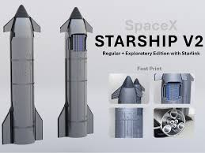

O sétimo teste de voo da Starship e o primeiro da versão v2.0
O primeiro teste de voo da Starship de 2025 ocorreu com metas ambiciosas: tentar repetir nosso sucesso anterior de lançar e alcançar o veículo de lançamento mais potente do mundo, ao mesmo tempo em que submetemos uma Starship redesenhada e atualizada a um rigoroso conjunto de demonstrações de voo. 
Serviu como um lembrete de que os testes de desenvolvimento, por definição, podem ser imprevisíveis.
Em seu sétimo teste de voo, a Starship decolou com sucesso da Starbase no Texas às 4:37 pm CT na quinta-feira, 16 de janeiro. No lançamento, todos os 33 motores Raptor impulsionaram o propulsor Super Heavy e a Starship em uma subida nominal. Após uma separação bem-sucedida do estágio quente, o propulsor fez a transição com sucesso para sua queima de boostback, com 12 dos 13 motores Raptor planejados reacendendo, para começar seu retorno ao local de lançamento
O Super Heavy então reacendeu todos os 13 motores Raptor planejados do anel central e central e realizou sua queima de pouso, incluindo o motor que não reacendeu para queima de boostback. A queima de pouso desacelerou o Super Heavy e manobrou para os braços da torre de lançamento e captura, resultando na segunda captura bem-sucedida de um propulsor Super Heavy.